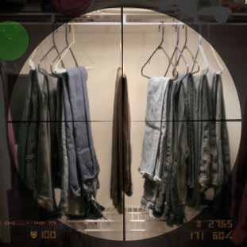

 |
||
Have you ever been so scarred by something that you thought you could never experience good things again? I have. That deep emotional scar was created by jeans. They have been absent from my life for more than ten years. We all have had a pair of jeans that either didn't fit right or was just plain uncomfortable. I had a pair of jeans that essentially could have been used for criminal interrogation. I was so deeply hurt by this experience that for ten years I could not bring myself to exchange money for what seemed to basically be a medieval torture device. At this point you may ask yourself, “Why is this kid writing about jeans?” An even better question would be, “Why am I reading this?” Well, I can't really give a good answer to either of these questions. What I can offer is an inspiring story about a man that lost his way and was born again into comfort and style. For years I wore jeans that would constrict, squeeze, and even choke areas of my body that can be extremely, let's say, “temperamental.” They felt like sandpaper leg condoms. Essentially, I wore jeans that seemed to be better fit for a monkey. I found myself t aking off my pants every chance I got. I think this is when I started my life long hatred of pants in general. Of course, on the top of my list were jeans. For years I could be seen sporting khakis with an extremely content look on me face. I was comfortable. I was happy. I thought I was in love. I just recently found out I didn't know was true love was. One day, I found myself in a clothing store. That day I had no intention of trying on clothes or buying anything. Most of the khakis I was browsing through had a tag price of $60 and up. That was out of line as far as I was concerned. Out of the corner of my eye I saw a sale sign and, to my disappointment, the only items under it were jeans. I looked at the price and was intrigued by the “MUST GO PRICE” of $15. I'm not sure what got into me that day – maybe it was the all-you-can-eat fried fish I had 15 minutes earlier – but I decided to slap them on. As I tried them on, something felt different. Something just seemed to feel right. Now, it could have been the three shots and two beers I had ten minutes before the fried fish. But when I put on the jeans, angels could have been draping my ass in velvet. I could not have told you the difference. I knew at that point I had found my one true. At that very moment, it seemed our sordid past melted away into nothing and I knew for the first time in my life that I was truly happy! |
||